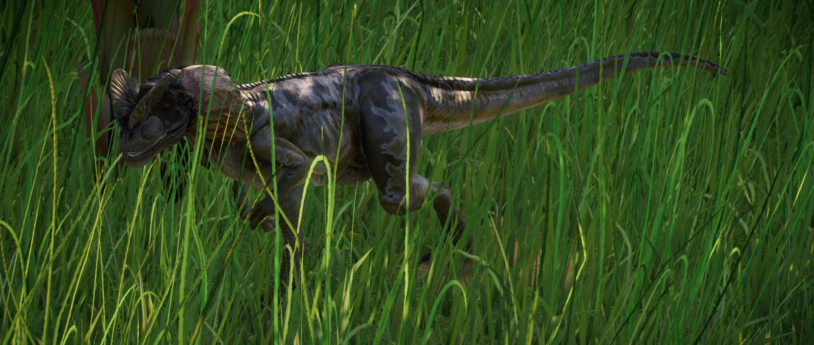

O Dilofossauro é um gênero de grande terópode carnívoro, tendo em média 3m de comprimento e 300kg de peso. Seu nome (que se traduz como “lagarto de duas cristas”) vem das cristas distintas que ficam no topo de sua cabeça, que são usadas para atrair parceiros para se reproduzir. Sua constituição esguia significa que pode se mover em alta velocidade, enquanto sua mandíbula poderosa permite que segure a presa enquanto ela luta para escapar.